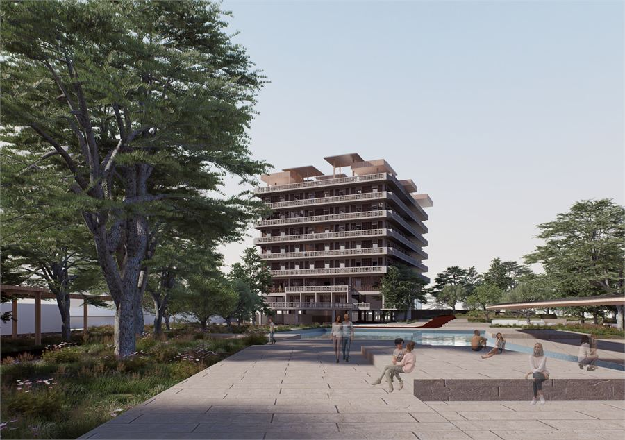
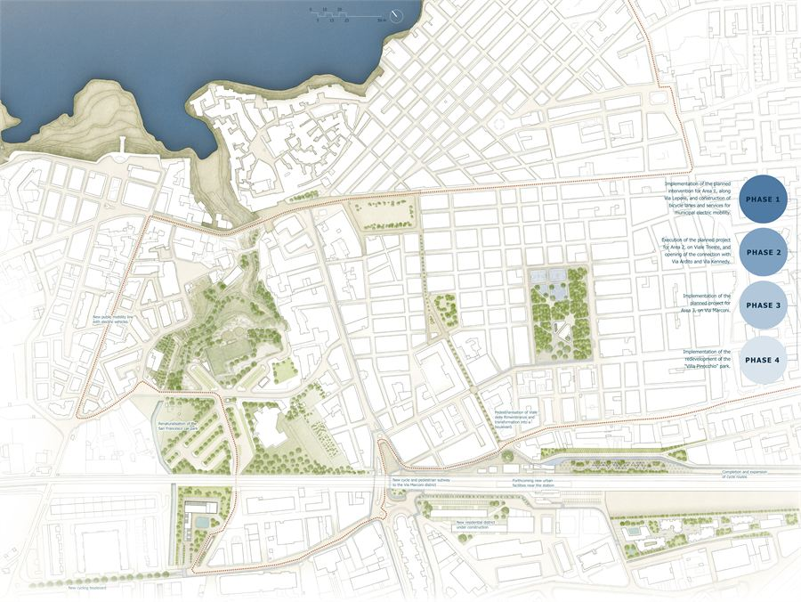
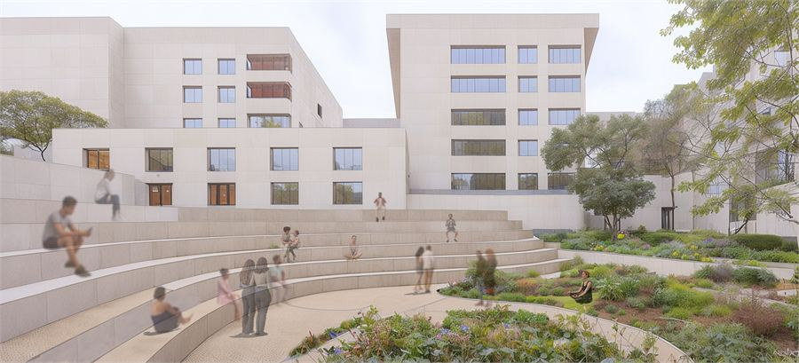
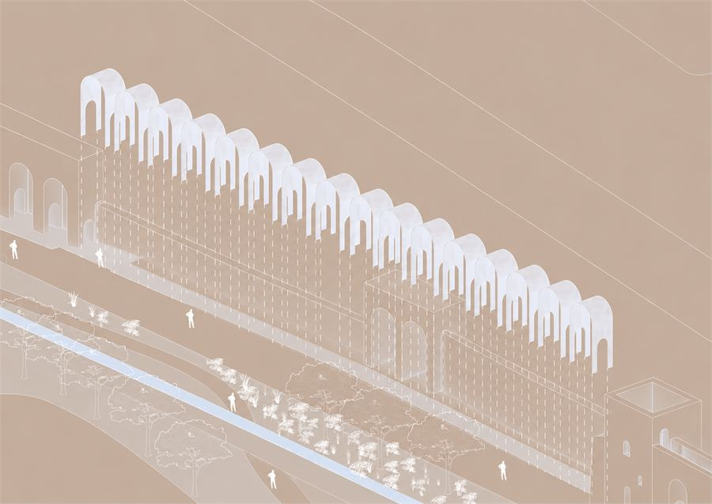
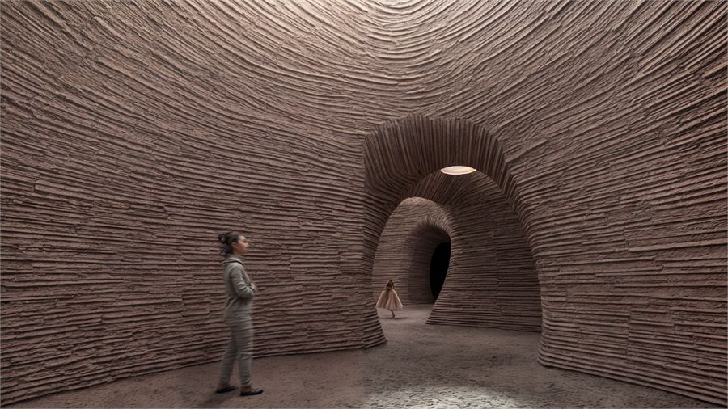

Featured projects

The St. George Hotel and Bay
One of Beirut's first modernist buildings, derelict since 1975 and fenced off from its own shoreline. The thesis argues it back into public life through climate-aided regeneration.

Polymnia Futura
A town under tourist pressure, read through its movement. Four sites turn parking and residual ground into mobility hubs, housing and park.

Viale Marconi
A traffic axis turned back into the neighbourhood's public room, with the green branching from it into the block interiors and down to the Tiber.

Mura Aureliane
The collapsed galleria of the Aurelian Wall, indexed rather than rebuilt — a modular corten addition that restores the rhythm without competing with the ruin.

Shelter — Abdali Farmhouse
A cluster of rammed-earth domes designed to be raised by volunteers in a workshop, so the building teaches the technique that made it.